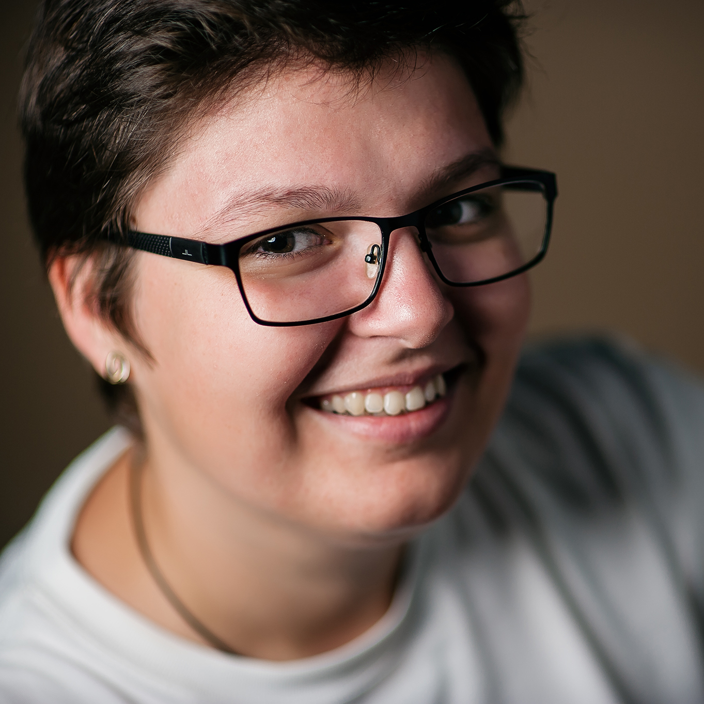

<!DOCTYPE html>
<html>
    <title>Fotograf</title>
    <meta charset="UTF-8">
    <meta name="keywords" content="layout test">
    <meta name="author" content="Simona Stanciu">
    <meta name="viewport" content="width=device-width, initial-scale=1.0">
    <link rel="stylesheet" type="text/css" href="resources/main.css">
    <link rel="stylesheet" href="bundles/font-awesome/css/all.css">
    <link rel="preconnect" href="https://fonts.gstatic.com">
    <link href="https://fonts.googleapis.com/css2?family=Mr+De+Haviland&family=Roboto:wght@100;300;400;500;700;900&display=swap" rel="stylesheet">
    <link href="https://fonts.googleapis.com/css2?family=Roboto:wght@100;300;400;500;700;900&display=swap" rel="stylesheet">
</html>

<body>
    <header>
        <div class="logo">
            
        </div>

        <nav> 
            <div class="menu">
                <a href="homepage.html">Home</a>
                <a href="">Portofoliu</a>
                <a href="">Servicii</a>
                <a href="">Blog</a>
                <a href="about-me.html">Despre mine</a>
                <a href="contact.html">Contact</a>
            </div>
            <div class="menu-mobile">
                <i class="fas fa-bars"></i>
            </div>
        </nav>

        <div class="social-media-links">
            <a href="https://www.facebook.com/simonastanciu.ro">facebook.</a>
            <a href="https://www.instagram.com/simonastanciu.ro">instagram.</a>
        </div>
    </header>

    <main>
        <h1>Fotograful amintirilor tale!</h1>
        <h2>fotografie de nunta in Constanta</h2>
    </main>

    <main class="container">
        <div class="image-slider">
            <span class="image-1"></span>
            <span class="image-2"></span>
            <span class="image-3"></span>
            <span class="image-4"></span>
        </div>
        
        <div class="image-wrapper-arrows">
            <i class="fas fa-arrow-left"></i>
            <i class="fas fa-arrow-right"></i>
        </div>
    </main>

    <section>
        <h3>alege o poveste</h3>
        <hr>
        <div class="blogpost-wrapper">
            <div class="top"> 
                <div class="top-left">
                    <div class="top-left-name">Emma si George</div>
                </div>
                <div class="top-right">
                    <div class="top-right-name">Markodor Foodtruck</div>
                </div>
            </div>

            <span class="bottom">
                <div class="bottom-left">
                    <div class="bottom-left-name">Optica medicala Optibis</div>
                </div>    
                <div class="bottom-right">
                    <div class="bottom-right-name">Lavinia si Ionut</div>
                </div>
            </span>
        </div>

        <div class="shortcut-links"> 
            <a href="">Nunta si logodna</a>
            <a href="">Incarca mai multe...</a>
            <a href="">Copii si familie</a>
        </div>
    </section>

    <section>
        <h3>serviciile mele</h3>
        <hr>
        <div class="service-wrapper">
            <div class="event-wrapper">
                <i class="fas fa-camera"></i>
                <div>Fotografie eveniment</div>
                <p>Indiferent ca este vorba despre o nunta sau un botez, este foarte important să pastrati vie amintirea evenimentului vostru.</p>
            </div>

            <div class="sessions-wrapper">
                <i class="fas fa-camera"></i>
                <div>Sesiuni foto</div>
                <p>Sesiunile foto sunt un mod distractiv de a avea un set de imagini cu cei dragi sau de a captura amintirea unui moment special.</p>
            </div>

            <div class="corporate-wrapper">
                <i class="fas fa-briefcase"></i>
                <div>Fotografie corporate</div>
                <p>Ofer servicii foto profesionale pentru companii. De la fotografii de eveniment la fotografii de prezentare a afacerii sau produs.</p>
            </div>
        </div>
    </section>

    <section>
        <h3>hai sa facem cunostinta!</h3>
        <hr>
        <div class="about-me-wrapper">
            <div class="about-me-width"> 
                <div class="about-me-image-wrapper">
                    
                </div>
            </div>    
            <div class="about-me-text-wrapper">
                <div>hello! sunt Simona, fotograf de eveniment</div>
                <h4> Fotograf nunta in Constanta</h4>
                <p> <strong>Pasiunea</strong> este cuvantul cheie cand vine vorba de fotografie. Am inceput cu fotografii pentru <strong>suflet</strong>, iar urmatorul pas, firesc as spune eu, a fost fotografia de <strong>nunta</strong> si fotografia de <strong>botez</strong>.
                    <br>
                    Am inceput timid in 2013 si de atunci incerc mereu sa ma depasesc pe mine insami, sa fiu cat mai creativa si sa cresc incet, incet, atat ca om, cat si ca fotograf.
                    <br>
                    Consider ca nuntile (si botezurile) sunt despre <strong>momente</strong> si <strong>emoțiile</strong> care ne definesc viata si care merita sa fie documentate asa cum se cuvine.
                    <br>
                    Vrei sa stii mai multe despre mine?
                    <br>
                    Ma gasesti pe <a href="https://www.facebook.com/simonastanciu.ro">facebook</a> si <a href="https://www.instagram.com/simonastanciu.ro">instagram.</a></p>
            </div>
        </div>
    </section>

    <section>
        <h3>prin ochii vostri</h3>
        <hr>
        <div class="testimonial-wrapper">
            <p>Recomand cu incredere! Simona este o persoana speciala si plina de pasiune in ceea ce face. Am colaborat cu ea in cadrul nuntii personale si este un fotograf excelent, cu care m-am inteles extraordinar de la prima intalnire!</p>
            <div>Delia si Adi</div>
            <div>
                <i class="fas fa-ellipsis-v"></i>
            </div>
        </div>    
        
    </section>

    <section>
        <h3>planifica-ti de acum evenimentul!</h3>
        <form>
            <div class="first-row"> 
                <input required type="text" id="name" name="name" placeholder="Numele tau">
                <input required type="email" id="email" name="email" placeholder="Email-ul tau">
            </div>
            <input required type="text" id="subject" name="subject" placeholder="Subiect">
            <textarea required name="message" id="message" placeholder="Mesajul tau"></textarea>
            <input required type="text" id="findOut" name="findOut" placeholder="Cum ai aflat despre mine?">
        </form>
        <div class="submit-wrapper">
            <button type="submit">TRIMITE</button>
            <div class="gdpr"> 
                <input required type="checkbox" id="gdpr-checkbox" name="gdpr-checkbox" value="gdpr-checkbox">
                <label for="gdpr-checkbox">Sunt de acord cu salvarea si prelucrarea datelor.</label>
            </div>
        </div>
    </section>

    <footer>
        <div class="footer-container">
            <div class="footer-links"> 
                <a href="">Avertizare legala</a>
                <a href="">Politica de confidentialitate</a>
                <a href="">Cookies</a>
            </div>
            <div>Simona Stanciu fotograf &copy 2021</div>
        </div>
    </footer>
</body>